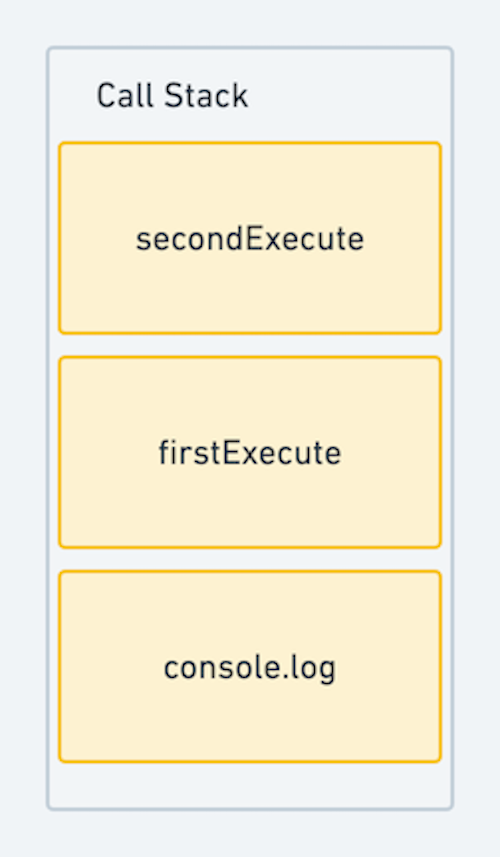

자바스크립트의 특징
나는 주로 자바스크립트를 이용해 개발을하는 것을 좋아한다.
내 기준 가장 자신있는 언어이기도 하고, 배우면서 흥미로움을 느낀 프로그래밍 언어 중 하나였다.
하지만 자바스크립트는 쓰면 쓸수록 헷갈리는 개념도 많고, 처음엔 만만하게 보였지만 깊이 들어갈수록 난해한..언어이기도 하다.. (아직도 어렵다 ㅠㅠ)😵
자바스크립트에 대한 핵심적인 내용을 짚고 넘어가고자 해당 시리즈를 포스팅하기로 마음 먹었다!
첫 번째는 자바스크립트는 어떻게 동작할까?
유연한 언어
자바스크립트에서의 타입 체크는 타 언어보다 굉장히 유연하고 느슨하다.
아래 예시를 보면 보통의 언어 같으면 컴파일 단계에서 들어오지 않은 값에 대해 오류를 내뿜어내지만, 자바스크립트에서는 일단 처리를 한다.
제대로 타입체크를 하지 않으면 undefined(알 수 없음), NaN(숫자가 아님)등의 원치않는 값들이 런타임 단계에서 출력되기도 한다.
이런 유연함과 느슨함이 장점이자 단점이 되는것이 개발자에게 자유를 보장하지만, 자칫 검증을 제대로 하지 않을 경우 그 책임도 개발자에게 발생한다.
function add(a, b) {
return a + b;
}
add(1, 2); //3
add('1' + 2); //'12'
add(1); //NaN
객체와 함수가 핵심
자바스크립트의 거의 모든 것은 객체이다.
객체는 값의 속성을 나타내는 key와 속성을 표현하는 value로 구성되어 있다.
객체는 리터럴 방식으로 생성하는 방식과, 생성자 방식으로 생성하는 방식이 있다.
var fruit = {
name: 'apple',
price: 1200
};
var food = new Object();
food.name = 'ramen';
food.price = 1500;
//동적으로 추가 및 삭제도 가능하다.
fruit.color = 'red'; //fruit 객체에 color 속성 추가
delete food.price; //food 객체의 price 속성 삭제
boolean, number, string, null, undefined타입을 제외한 나머지는 모두 객체로 구성되어 있다.
심지어 함수도 객체이다. 일반적인 객체보다 더 많은 기능이 있는 객체 정도로 생각하면 된다.
typeof [1, 2, 3] //"object"
typeof {name : 'jiny'} //"object"
typeof new Date() //"object"
typeof funtion(){} // "function"
위의 예제를 보면 배열은 객체로 취급하는것을 알 수 있지만, 함수는 자료형 검사시 “function"으로 출력되기 때문에 객체로 자료형을 인식하지 않는다고 생각할 수 있다.
하지만 함수도 엄연하게 객체로 취급받는다. 이유는 여러가지가 있지만 아래 2가지 핵심적인 이유가 있다.
- 함수도 변수에 할당 가능하다.
자바스크립트에서의 일반 객체
Object처럼 취급할 수 있다. 함수에 사용자 정의 속성을 추가하는 것도 가능하다.
function log(msg) {
return msg;
}
//함수 log에 속성 추가
log.author = 'jiny';
log.execute = log('hello');
console.log(log.author); //'jiny'
console.log(log.execute); //'hello'
- 함수도 값으로 취급한다. 함수를 이용해 할 수 있는 것은 마치 객체를 이용해 할 수 있는 것과 같다. (이를 일급 객체라고 정의한다.)
- 리터럴 생성 마치 객체 리터럴 생성 방식과 유사하게 함수도 선언과 동시에 빠르게 작성할 수 있다.
function add(a, b) {
return a + b;
}
- 변수나 배열의 요소 혹은 객체의 속성에 할당할 수도 있다.
//변수에 할당
var add = function (a, b) {
return a + b;
};
//객체 속성에 할당
var calculator = {
add: add
};
//배열에도 할당
var sampleArray = [0, '1,', add];
- 함수의 인자로 전달가능하고, 리턴값으로도 사용할 수 있다.
var success = function(){
console.log("success");
}
//add 함수에 success 함수를 3번째 인자로 넘기는 코드
function add(a, b, callback){
var result = a + b;
if(!isNaN(result){
return callback()
}
}
//함수 실행
add(1,2,success);
자바스크립트가 실행되는 과정
콜스택
자바스크립트에서는 실행 컨텍스트라는 콜스택 처리 방식으로 코드들을 실행한다.
콜스택은 함수들을 호출(Call)하는 호출 정보들을 스택(Stack)에 차곡차곡 쌓여 있는 것을 의미한다.
제일 나중에 올려져있는 스택부터 처리하기 때문에 선언한 코드들을 블록단위로 호출 스택에 쌓아놓고 하나씩 반환하면서 코드들을 실행한다.
console.log('global stack');
function firstExecute() {
console.log('first!');
}
function secondExecute() {
firstExecute();
console.log('second!');
}
secondExecute();
/*
global stack
first!
second!
*/
위 코드를 콜스택 구조로 표현하자면 아래와 같다.

설명을 하자면 먼저 유호범위 최상위에 있는 console.log 메서드 부터 스택에 삽입된다.
호출스택에 모두 쌓이고 실행을 시키는 것이아니라 스택에 쌓는 순간 해당 컨텍스트가 실행된다.
실행이 끝나면 다시 콜스택에서 반환이 되면서 콜스택에 쌓인 컨텍스트를 모두 비워내게 되는것이다.
실행 컨텍스트
그럼 좀 더 자세하게, 실행 컨텍스트에는 어떤일이 일어날까?
먼저, 해당 실행 컨텍스트에서 사용할 매개변수나 정의한 변수들이 생성된다. 즉, 실행 컨텍스트를 수행하기 위한 사전 작업을 하는 것이다.
(이는 자바스크립트 엔진 내부에서 일어난다.)
그리고 arguement 객체를 생성하는데 이는 호출할 때 넘긴 인자들이 저장되어 있는 객체라고 보면 된다. (배열이지만 객체다!)
function add(a, b) {
//code
}
그 다음, 현재 컨텍스트의 유효 범위를 나타내는 스코프 정보를 생성하는 작업을 하게된다.
리스트 형태로 만들어지는데 이 스코프 리스트를 활용해 상위 컨텍스트의 변수에 접근하거나, 해당 컨텍스트의 변수에 접근할 수 있다.
이 스코프 리스트는 서로 연결되어 있어 (해당 컨텍스트 범위에 없으면 상위 컨텍스트 범위에서 찾는다..)스코프 체인으로 불린다.
var number = 2;
function add(a, b) {
return a + b + number;
}
해당 함수안에서 매개변수를 사용 할 수 있고, 스코프 체인을 통해 외부의 변수들도 사용할 수 있는 상태이다.
이제 생성된 지역 변수가 변수 객체로 만들어진 후에 해당 코드 범위안에 있는 여러 계산실행이 이루어진다.
만약 값이 할당되지 않았거나, 넘겨 받지 못했다면 undefined로 할당되어버린다.
var number = 2;
function add(a, b) {
var result = a + b + number;
return result;
}
add(2, 3);
그동안 얕게나마 알고 있는 이 중요한 개념들을 다시 책을 찾아보고 정리하느라 애먹었다..
더 깊게 들어가면 끝도 없이 여러 개념들이 즐비하게 나온다..ㅠㅠ
이 장에서는 2가지만 기억하면 될 것 같다!
1. 자바스크립트는 거의 모든 것들이 객체로 구성되어 있다. (심지어 함수까지도..)
2. 자바스크립트 엔진은 콜스택 기반의 실행컨텍스트(Execution Context)를 생성하며 코드들을 실행한다.
참고자료
- 모던웹을 위한 자바스크립트 + JQuery 입문 - 객체 (윤인성 저)
- MDN - typeof
- 인사이드 자바스크립트 - arguments 객체 및 실행 컨텍스트 (송형주, 고현준 저)